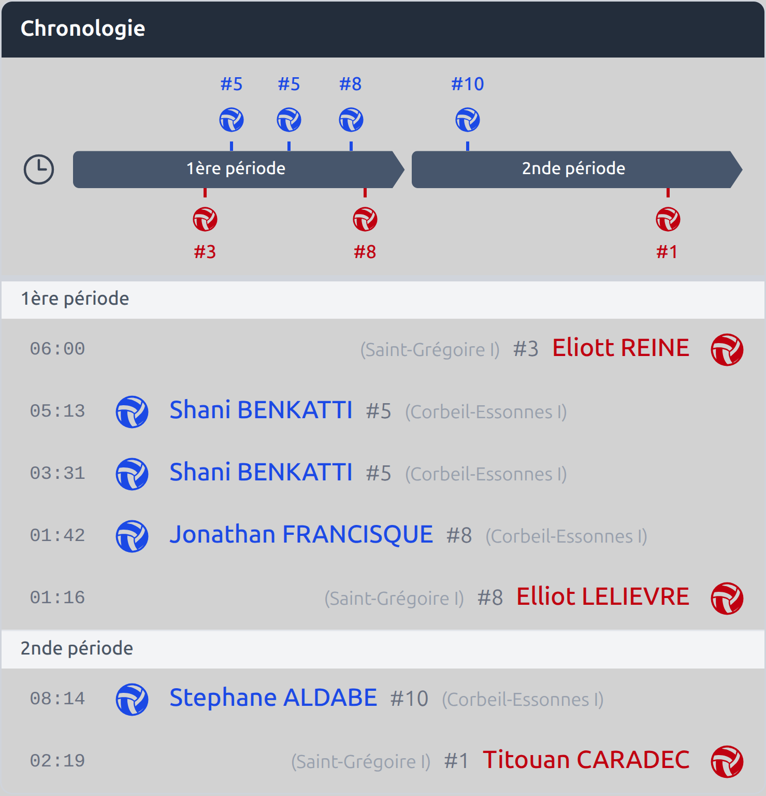
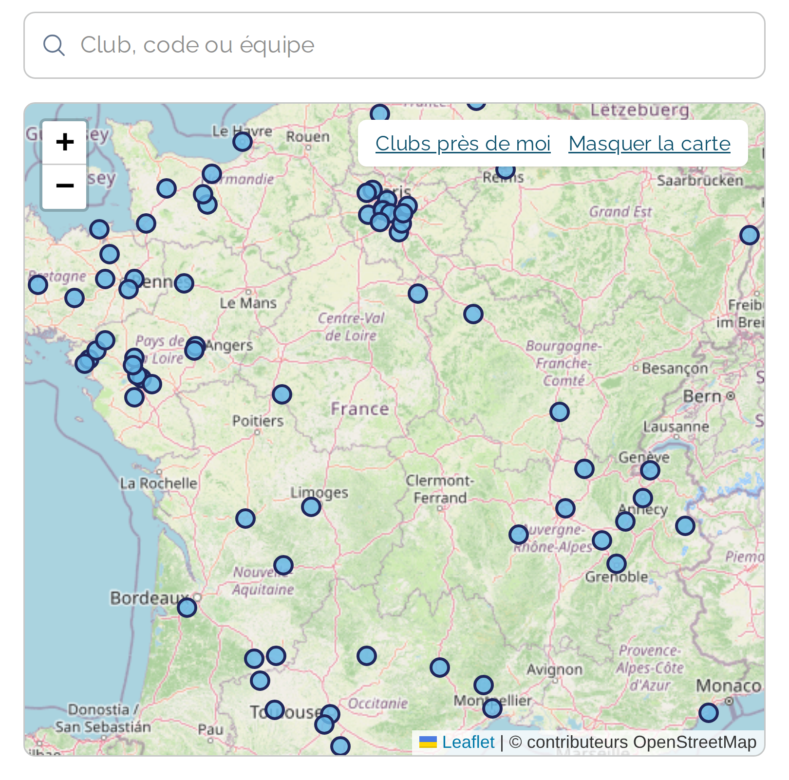
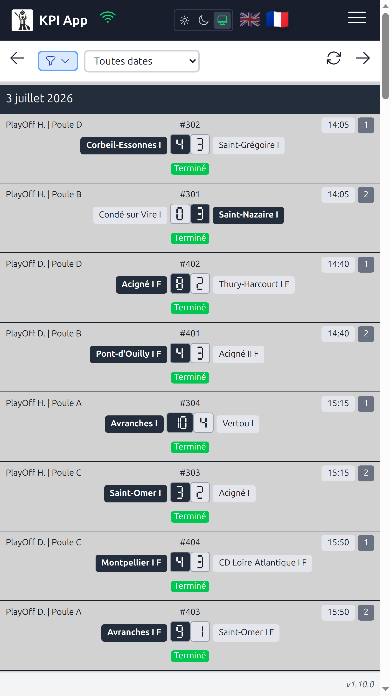

Scores, classements, et chaque match minute par minute. Gratuite, sans compte, même sans réseau.

Plus de 200 clubs sur la carte, le palmarès des compétitions, et tes dates dans ton agenda.

Scores, classements, et chaque match minute par minute.
